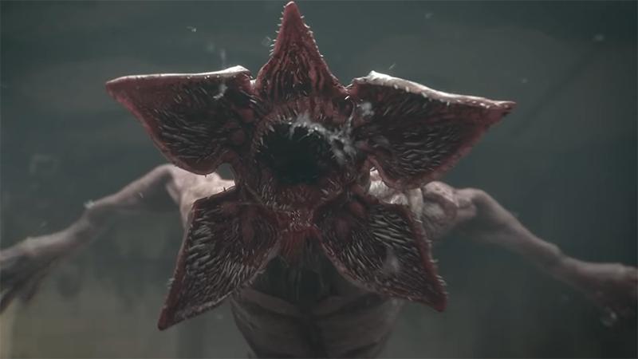
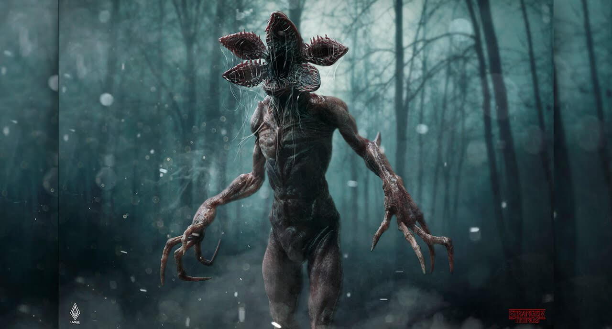
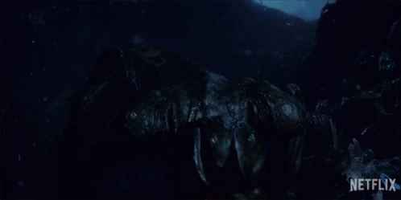
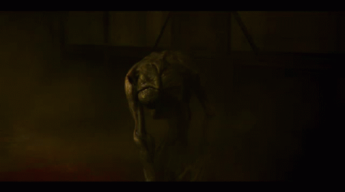
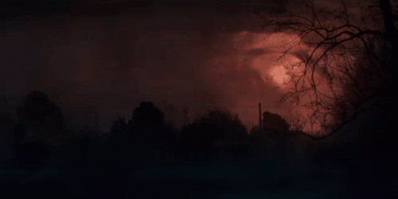
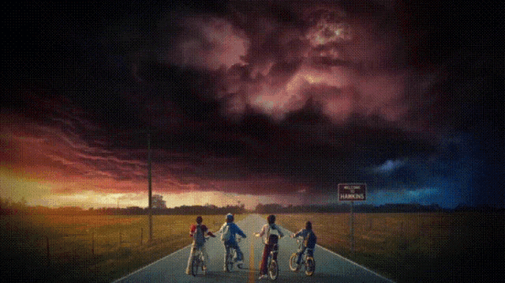
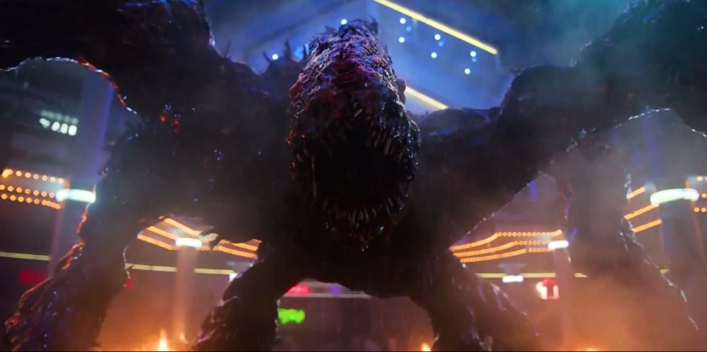
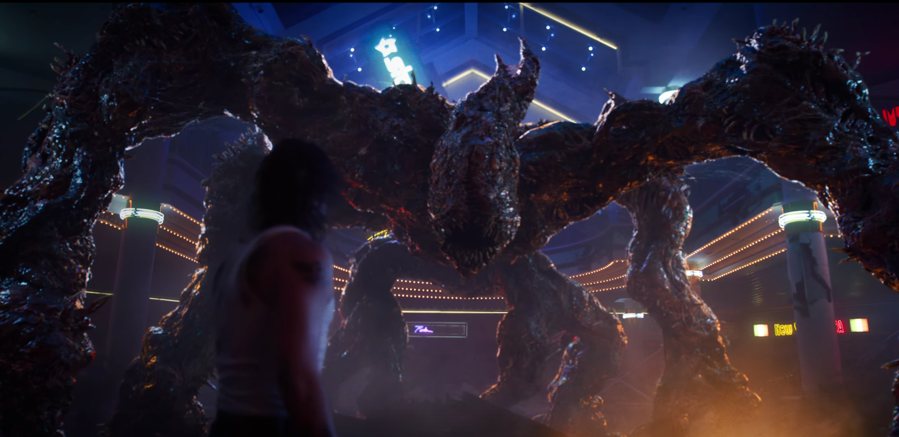

Демогоргон:
Демогоргоны — хищные существа с обратной стороны, альтернативного измерения. Демогоргоны обладают коллективным разумом и подчиняются Истязатель Разума.
Биография
Демогоргон очевидно произошел еще до событий первого сезона, как полностью развившийся вид. Из-за того, что Одиннадцатая открыла портал, существо получило возможность перемещения из одного измерения в другое. Наткнувшись на Уилла Байерса, утащил его на другую сторону, но мальчик сумел скрыться, в отличие от Барбары Холланд, чей порез на руке привлек Демогоргона. Демогоргона притягивает кровь. Именно эта особенность помогла Джонатану и Нэнси привлечь его, когда они собирались загнать его в ловушку.Но в конце был убит Одиннадцать, когда она защищала своих друзей.
Внешний вид
 Высокий, с длинными корявыми руками и ногами, хищник. Зрительный аппарат отсутствует, слуховой и обонятельный не локализируются, но существо ориентируется в пространстве, опираясь на эти чувства. Обоняние развито хорошо, жертву ищет по запаху, особенно если присутствует запах крови. Его ротовой аппарат представляет собой челюсть из пяти лепестков, что придаёт сходство с раффлезией или орхидеей. Помимо нападения и питания рот существо раскрывает также и для устрашения, обнажая несколько рядов острых зубов. Кожа очень крепкая, пули не берут. Обладает способностью к открытию своеобразных кротовых нор из одного измерения в другое, которые с течением времени исчезают.
Жизненный Цикл
Фаза 1

Демогоргоны-личинки похожи на обычного слизняка, они такие же маленькие, но слегка отличаются цветом. Личинки обычно темно-зеленые с желтыми точками. Личинки обитают в телах жертв демогоргонов, среди которых были Уилл Байерс и Барбара Холланд.
Фаза 2-5
Фаза 2

Демогоргона в этой стадии развития нашел Дастин. Существо было размером с ладонь, а его цвет был желто-зеленым. У существа был хвост, руки и крошечный рот. Демогоргон боялся яркого света, и с удовольствием съел предложенные ему сладости.
Фаза 3

После личинки демогоргон Дастина стал темно-зеленым и вырос. У него появилась пара ног, и благодаря четырем конечностям он стал способен быстро передвигаться. Существо стало больше, его хвост также вырос и стал толще.
Фаза 4

Позже Дарт еще больше вырос и стал размером с собаку. Его конечности стали длиннее, а кожа темнее. Его рот стал больше, и он раскрывался, подобно цветку, так, что можно было видеть ряд острых зубов. К этому моменту Дарту надоела нуга, его стало привлекать мясо. Демогоргон выбрался из своего аквариума и съел кошку Дастина.
Фаза 5

Демогоргон Дастина продолжил расти и стал размером с датского дога. Он смог прорыть туннель и выбраться из подвала, где его заперли, и стал гораздо сильнее. На этой стадии Дарт объединился с другими демогоргонами и стал очень злым. Он попал под влияние Истязатель Разума. Однако в нем сохранились остатки былой привязанности к Дастину.
Фаза 6
Демогоргон, с которым столкнулись жители Хоукинса в 1983 году, был уже взрослым. Он стоял на двух ногах, в отличие от существ на предыдущих стадиях развития. У него также уже не было хвоста. Этот демогоргон был очень силен, но боялся огня, а также умел создавать порталы.
 Истязатель Разума:
 Происхождение
История Истязатель до событий октября 1984 года остается тайной. Неизвестно, как долго длится его существование, и как вообще он появился. В ноябре 1983 года были открыты межпространственные ворота в Лаборатории Хоукинса, через которую в наш мир стала проникать обратная сторона. Неизвестно, находился ли в то время Истязатель Разума на обратной стороне.
Внешний вид
Истязатель Разума — огромное существо, похожее на паука. Точные детали, которые касаются его анатомии, неизвестны, так как Истязатель покрывает темный густой туман. Однако ясно, что у Истязатель есть конечности, некоторые из которых раздваиваются. Эти конечности похожи на корни или лозы, которые есть на обратной стороне. Присутствие Истязатель Разума часто сопровождается красными молниями. На момент 3 сезона, Истязатель Разума будет состоять из плоти и костей животных, людей.верховное существо, способное управлять всеми остальными жителями Обратной стороны и вселяться в попавших в параллельное измерение людей, как это случилось с Уиллом Байерсом. Обычно появляется в форме гигантского паука, похожего на монстра из «Мглы» Стивена Кинга. Боится жары.
 